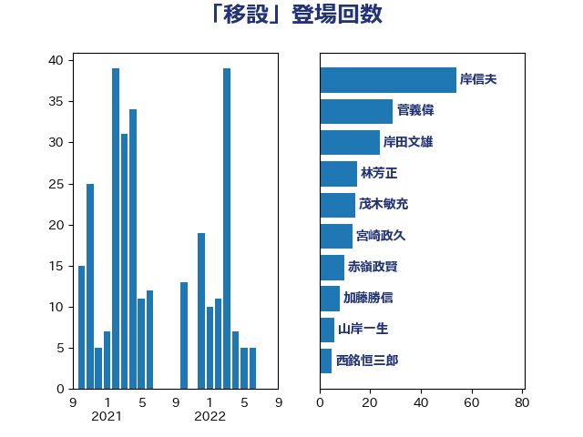

単語「移設」

| 岸信夫 | 自由民主党 | 54 回 |
| 菅義偉 | 自由民主党 | 29 回 |
| 岸田文雄 | 自由民主党 | 24 回 |
| 林芳正 | 自由民主党 | 15 回 |
| 茂木敏充 | 自由民主党 | 14 回 |
| 宮崎政久 | 自由民主党 | 13 回 |
| 赤嶺政賢 | 日本共産党 | 10 回 |
| 加藤勝信 | 自由民主党 | 8 回 |
| 山岸一生 | 立憲民主党 | 6 回 |
| 西銘恒三郎 | 自由民主党 | 5 回 |
| 小池晃 | 日本共産党 | 4 回 |
| 水岡俊一 | 立憲民主党 | 4 回 |
| 福山哲郎 | 立憲民主党 | 4 回 |
| 伊波洋一 | 無所属 | 3 回 |
| 松野博一 | 自由民主党 | 3 回 |
| 篠原豪 | 立憲民主党 | 3 回 |
| 芳賀道也 | 国民民主党 | 3 回 |
| 進藤金日子 | 自由民主党 | 3 回 |
| 和田政宗 | 自由民主党 | 2 回 |
| 斉藤鉄夫 | 公明党 | 2 回 |
| 枝野幸男 | 立憲民主党 | 2 回 |
| 源馬謙太郎 | 立憲民主党 | 2 回 |
| 田村貴昭 | 日本共産党 | 2 回 |
| 赤羽一嘉 | 公明党 | 2 回 |
| 道下大樹 | 立憲民主党 | 2 回 |
| 前原誠司 | 国民民主党 | 1 回 |
| 城井崇 | 立憲民主党 | 1 回 |
| 小泉進次郎 | 自由民主党 | 1 回 |
| 平沢勝栄 | 自由民主党 | 1 回 |
| 末松義規 | 立憲民主党 | 1 回 |
| 森まさこ | 自由民主党 | 1 回 |
| 橘慶一郎 | 自由民主党 | 1 回 |
| 河野太郎 | 自由民主党 | 1 回 |
| 竹内真二 | 公明党 | 1 回 |
| 萩生田光一 | 自由民主党 | 1 回 |
| 藤木眞也 | 自由民主党 | 1 回 |
| 西村智奈美 | 立憲民主党 | 1 回 |
| 重徳和彦 | 立憲民主党 | 1 回 |
| 金城泰邦 | 公明党 | 1 回 |
| 鈴木宗男 | 日本維新の会 | 1 回 |
| 鬼木誠 | 立憲民主党 | 1 回 |